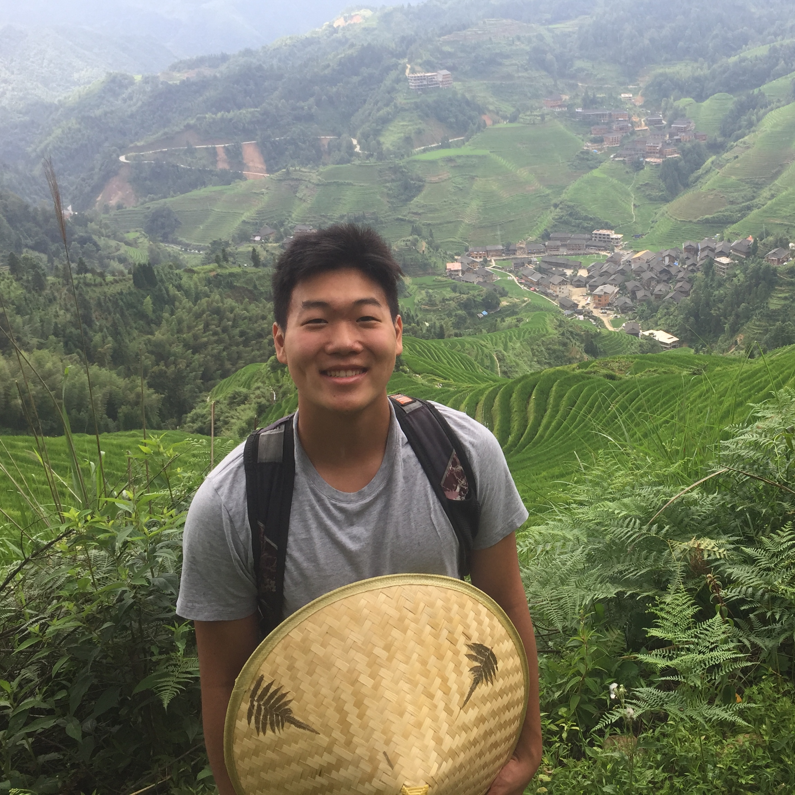
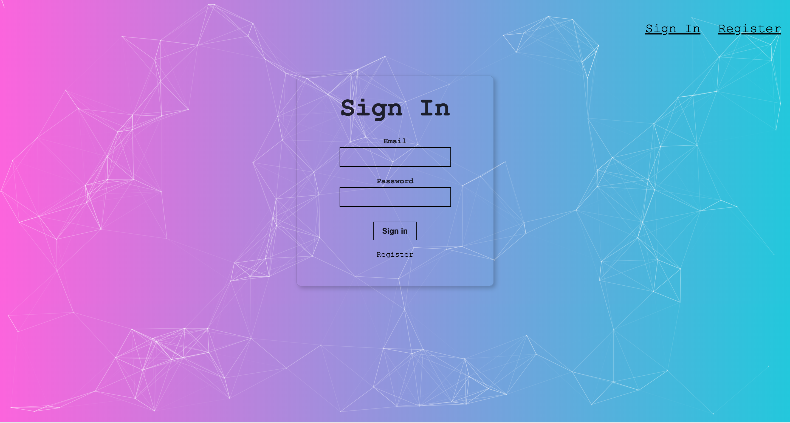

Hi, I'm Justin. I am a Software Developer,
Travel Enthusiast, Sports Fan, and
Food Connoisseur.
Travel Enthusiast, Sports Fan, and
Food Connoisseur.
About Me
Hello! My name is Justin Dong and I'm a fourth-year studying Computer Science at the University of California, Santa Barbara. I am originally from San Jose, California where I first began to take an interest in technology and programming. Some of my experience includes working as a Software Engineering Intern at FLIR Systems, maintaining the website on the Engineering team for Data Science UCSB, and helping nonprofits as a Strategy Consultant for UCSB 180 Degees Consulting.
I am particularly interested in the fields of Web development, Data Science, and UI/UX Design. I hope to apply my knowledge of coding into real world applications in our tech-driven society. See what I'm working on here!
You can find me on LinkedIn or contact me through email at justin.s.dong99@gmail.com
I am particularly interested in the fields of Web development, Data Science, and UI/UX Design. I hope to apply my knowledge of coding into real world applications in our tech-driven society. See what I'm working on here!
You can find me on LinkedIn or contact me through email at justin.s.dong99@gmail.com

Experience
|
|
|
I was contracted through Muncaster Consulting to work at FLIR Systems as part of the CTO team. Working at FLIR, I worked on both a large scale data repository web application capable of handling multiple terabytes of data as well as a complex Computer Vision Library for handling CNNs. Working on the web application, I developed a streamlined Continuous Integration server using various technologies such as Jenkins, Docker, and different shell scripts.
I was also trained in the Agile Methodology through daily standups to connect and maintain positive relationships with other employees.
|
|
|
Data Science UCSB is the premier programming and tech club at UCSB, consisting of over 200 active members and 400 total members. Data Science UCSB strives to help members achieve their goals in the realm of Data Science by facilitating groups to speed up the production of projects. As a member of the Engineering Team along with two other officers, we work to implement and maintain the club's website to make sure that it remains fully functional.
Over the past year, we have worked to fully re-design the website from scratch to enable more accessible information for our members.
|
|
|
180 Degrees Consulting is a pro-bono consulting organization who works to help local nonprofits and charities develop business plans and strategies. As a Strategy Consultant, I work on a team with 10-12 other consultants and a project manager to complete a full consulting cycle each academic quarter. This includes reaching out to potential clients, identifying a problem, as well as structuring and presenting a solution.
Our most recent team project involved working with Unite to Light, a nonprofit organization based in Santa Barbara that works to provide adequate lighting in third world countries.
Projects
React.js, Java, MySQL
Along with four other team members, we fully designed and implemented a web application that takes as input various ingredients that you have in the kitchen and outputs a selection of recipes you can make. I worked primarily on the frontend of the application and integrating the connection to dynamically receive recipes from the database.
Github

Smart Brain
React.js, Node.js, MySQL
I developed an image recognition web application that can identify faces within a given photo. I completed this project in the summer of my first year to gain more exposure and knowledge on the development process of a full stack web application as well as API usage. For this project, I utilized the Clarifai API which helped me locate and detect the faces within a photo. I also fully implemented the frontend and backend technologies for this project to allow for a smoothly running interface.
React.js, Node.js, MySQL
I developed an image recognition web application that can identify faces within a given photo. I completed this project in the summer of my first year to gain more exposure and knowledge on the development process of a full stack web application as well as API usage. For this project, I utilized the Clarifai API which helped me locate and detect the faces within a photo. I also fully implemented the frontend and backend technologies for this project to allow for a smoothly running interface.